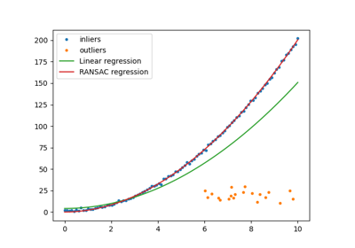
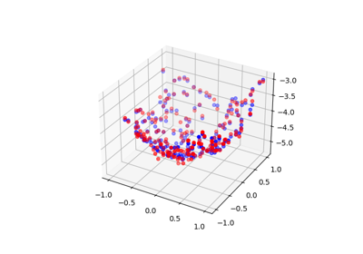
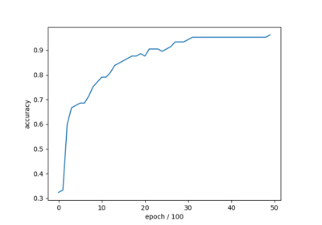
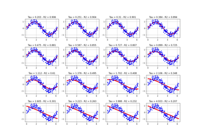
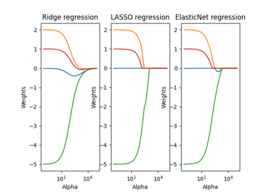
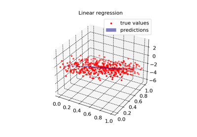

Linear Models
Here are some examples on how to use the linear models offered in the library.

Robust Regression with RANSAC

Polynomial Surface Regression with Total Least Squares
Polynomial Surface Regression with Total Least Squares

Logistic Regression on the Iris Dataset
Logistic Regression on the Iris Dataset

Locally Weighted Regression on a Sine Function
Locally Weighted Regression on a Sine Function

Regularization Path for Ridge, LASSO, and ElasticNet Regression
Regularization Path for Ridge, LASSO, and ElasticNet Regression

Linear and Regularized Regression Models on Synthetic Data
Linear and Regularized Regression Models on Synthetic Data